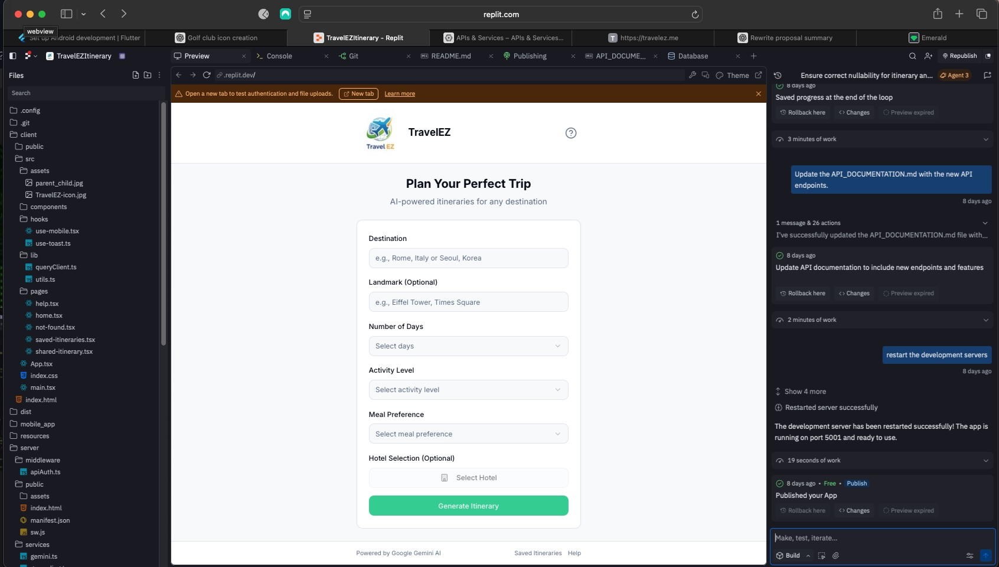
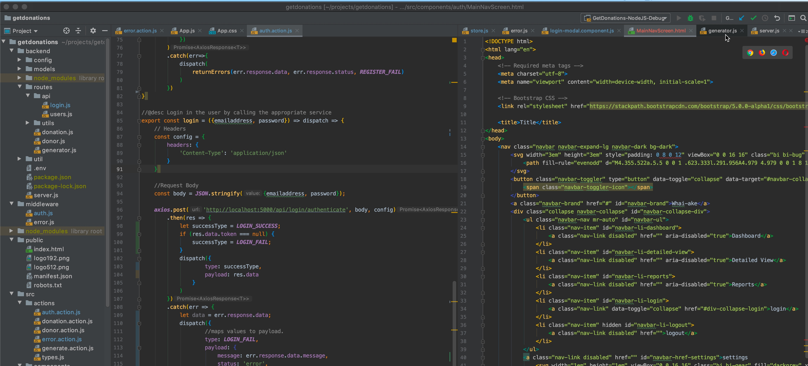
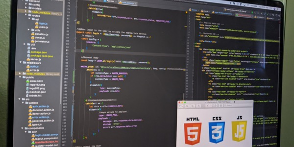

I'm a team leader, systems integrator, and software engineer with past work experience in engineering relevant, practical tools and applications based on stakeholder inputs.
I take ownership of tasks and seek out domain experts to help identify how applications can improve their impact and success.
I have a strong background in software development, testing, engineering processes, and database management system deployments.
I have a learning mindset and I'm excited about the revolution in software and system development we're experiencing now. AI Agents are increase our effectiveness and I'm spending time learning the benefits of using AI for system deployment. But I also realize that strong fundamentals are still needed to create effective solutions.
I'm excited for opportunities to use my skills to help build effective solutions that improve end user experiences and outcomes.
I'm a team leader, systems integrator, and software engineer with past work experience engineering relevant, practical tools and applications based on stakeholder inputs.
I have a learning mindset and I'm excited to use the new AI tools to help build effective solutions that improve end user experiences and outcomes.

LLM Application Deployment
LLM ApplicationsHigh Performance Analytics Platform
Architecture Migration
Data Generation for Training and Testing
Data Generation and Simulation
Web Development
Web Development